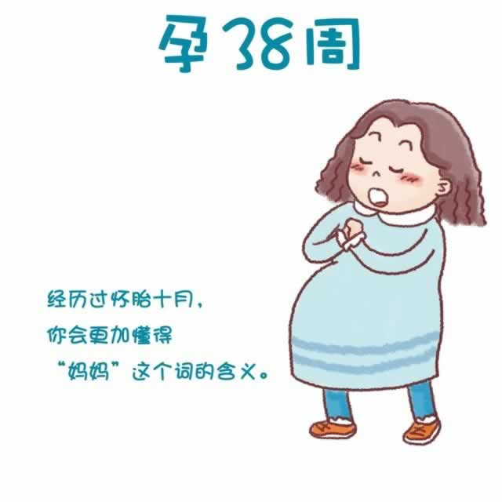

最近，在每周产检时医生都会帮你查看胎儿的发育情况、胎位以及宫颈的情况。但即便如此，谁都无法预测你准确的生产时间。随时观察自己身体的变化，通过一些分娩征兆来预测自己的生产时间，就显得越发重要了。
宝宝的胎动是不是减少了？有没有羊水破裂（破水）发生？医生产检时是否发现有宫颈变薄，变软，并且稍微张开的迹象？是否有见红？假宫缩是不是增多了？等等。有以上任何一种的现象出现时，都请立即去医院就诊，这可能预示着你即将分娩。
孕期接近尾声，准妈妈们在面对分娩心怀忐忑之余，还会有一种莫名的不舍。无论如何，经历了这段特殊的时期，你更加懂得“妈妈”这个词的含义了。